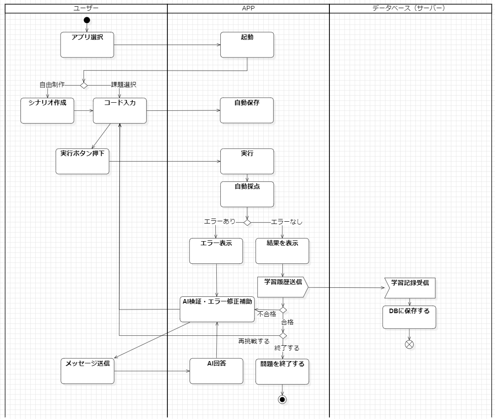

アクティビティ図 (Activity Diagram)
コードラボ｜学習・実行・AI支援・クラウド同期フロー
システム処理フロー図（3レーン構成）

⚠️ 画像ファイル（
activity.png
）が見つかりません。リポジトリ内に画像をアップロードしてください。
【図の処理要点】
ユーザーレーン：
アプリ選択、自由制作／課題選択、シナリオ作成・コード入力、実行ボタン押下、対話チャットでのメッセージ送信を担当。
APPレーン：
アプリ起動、バックグラウンド自動保存、Python実行、自動採点、エラー表示／結果表示、AI検証・修正補助、再挑戦分岐を管理。
データベース（サーバー）レーン：
実行・採点完了後に学習記録を非同期送信し、DBへ保存後に Flow final（⨂）で独立完了。